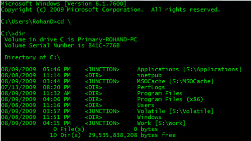
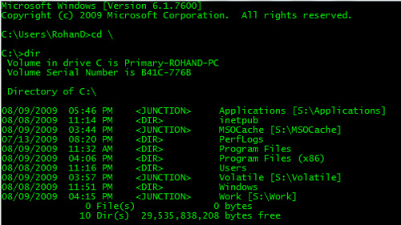

How to Create a Junction in Windows
Create a junction in Windows using the MKLINK command.
mklink /j source-path target-path
Example: create a junction named C:\Volatile to the S:\Volatile folder.
mklink /j C:\Volatile S:\Volatile
Create a junction in Windows using the MKLINK command.
mklink /j source-path target-path
Example: create a junction named C:\Volatile to the S:\Volatile folder.
mklink /j C:\Volatile S:\Volatile